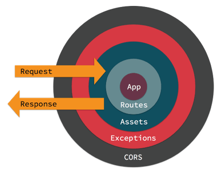

Middleware¶
Les objets Middleware vous donnent la possibilité d’encapsuler votre application dans des couches modulables et réutilisables du gestionnaire de requête ou de logique de construction de réponses. Visuellement, votre application se trouve au centre et les middlewares entourent l’application comme un oignon. Ici, on peut voir une application entourée des middlewares Routes, Assets, gestion d’Exceptions et gestion des headers CORS.

Quand une requête est gérée par votre application, elle entre par le middleware le plus à l’extérieur. Chaque middleware peut soit passer la requête / la réponse à la couche suivante, soit retourner une réponse. Retourner une réponse empêchera les couches plus basses d’accéder à la requête. Un exemple illustrant ce principe serait l’AssetMiddleware qui gérera la requête d’une image de plugin pendant le développement.
Si aucun middleware n’effectue une action pour gérer la requête, un controller sera utilisé et son action exécutée, ou une exception sera levée et génerera une erreur.
Les Middlewares font partie de la nouvelle pile HTTP qui influence la requête et les interfaces de réponse PSR-7. Ceci permet d’utiliser n’importe quel middleware compatible avec PSR-7 disponible sur Packagist.
Les Middlewares dans CakePHP¶
CakePHP fournit nativement plusieurs middlewares pour gérer des cas classiques d’une application web :
Cake\Error\Middleware\ErrorHandlerMiddlewarecapture les exceptions à partir du middleware encapsulé et affiche un page d’erreur en utilisant le gestionnaire d’exception Gestion des Erreurs & Exceptions.Cake\Routing\AssetMiddlewareverifie si la requête fait référence à un thème ou à un fichier ressource d’un plugin, tel que un fichier CSS, JavaScript ou image enregistré soit dans le dossier racine du plugin ou celui correspondant, pour un thème.Cake\Routing\Middleware\RoutingMiddlewareutilise leRouterpour analyser l’URL entrante et assigner les paramètres de routing à la requête.Cake\I18n\Middleware\LocaleSelectorMiddlewareactive le changement automatique de langage à partir de l’en-têteAccept-Languageenvoyé par le navigateurCake\Http\Middleware\SecurityHeadersMiddlewarefacilite l’ajout de header liés à la sécurité commeX-Frame-Optionsaux réponses.Cake\Http\Middleware\EncryptedCookieMiddlewarevous permet de manipuler des cookies chiffrés dans le cas où vous auriez besoin de manipuler des cookies avec des données obfusqués.Cake\Http\Middleware\CsrfProtectionMiddlewareajoute une protection CSRF à votre application.
Utilisation des Middleware¶
Les middlewares peuvent être appliqués de manière globale à votre application ou un scope de routing.
Pour appliquer un middleware à toutes les requêtes, utilisez la méthode middleware
de la classe App\Application. Si la classe App\Application n’existe pas,
reportez-vous à la section Ajout de la nouvelle pile HTTP à une application existante pour plus d’informations.
La méthode d’attache middleware de votre application sera appelée très tôt
dans le processus de requête, vous pouvez utiliser les objets MiddlewareQueue
pour en attacher
namespace App;
use Cake\Http\BaseApplication;
use Cake\Error\Middleware\ErrorHandlerMiddleware;
class Application extends BaseApplication
{
public function middleware($middlewareQueue)
{
// Attache le gestionnaire d'erreur dans la file du middleware
$middlewareQueue->add(new ErrorHandlerMiddleware());
return $middlewareQueue;
}
}
En plus d’ajouter à la fin de la MiddlewareQueue vous pouvez effectuer
différentes opérations
$layer = new \App\Middleware\CustomMiddleware;
// Le middleware sera ajouté à la fin de la file.
$middlewareQueue->add($layer);
// Le middleware sera ajouté au début de la file
$middlewareQueue->prepend($layer);
// Insère dans une place spécifique. Si cette dernière est
// hors des limites, il sera ajouté à la fin.
$middlewareQueue->insertAt(2, $layer);
// Insère avant un autre middleware.
// Si la classe nommée ne peut pas être trouvée,
// une exception sera renvoyée.
$middlewareQueue->insertBefore(
'Cake\Error\Middleware\ErrorHandlerMiddleware',
$layer
);
// Insère après un autre middleware.
// Si la classe nommée ne peut pas être trouvée,
// le middleware sera ajouté à la fin.
$middlewareQueue->insertAfter(
'Cake\Error\Middleware\ErrorHandlerMiddleware',
$layer
);
En plus d’appliquer des middleware à la totalité de votre application, vous pouvez appliquer des middleware à des jeux de routes spécifiques en utilisant les middlewares connectés à un scope.
Ajout de Middleware à partir de Plugins¶
Après que la file de middleware ait été préparée par l’application, l’évènement
Server.buildMiddleware est déclenché. Ce dernier peut être utile pour
ajouter un middleware depuis un plugin. Les plugins peuvent enregistrer des
écouteurs (listeners) dans leurs scripts bootstrap, qui ajoutent
un middleware
// Dans le bootstrap.php du plugin ContactManager
use Cake\Event\EventManager;
EventManager::instance()->on(
'Server.buildMiddleware',
function ($event, $middlewareQueue) {
$middlewareQueue->add(new ContactPluginMiddleware());
});
Requêtes et Réponses PSR-7¶
Les Middleware et la nouvelle pile HTTP sont construits sur les Interfaces de Requête et Réponse PSR-7. Alors que les middleware sont exposés à ces interfaces, vos controlleurs, composants, et vues ne le seront pas.
Interagir avec les Requêtes¶
RequestInterface fournit des méthodes pour interagir avec les en-tête,
méthodes, URI, et corps de la requête. Pour cela, vous pouvez:
// Lire l'en-tête en tant que texte
$value = $request->getHeaderLine('Content-Type');
// Lire l'en-tête en tant que tableau
$value = $request->getHeader('Content-Type');
// Lire l'ensemble des en-têtes en tant que tableau associatif.
$headers = $request->getHeaders();
Les requêtes donnent aussi accès aux cookies et aux fichiers envoyés qu’elles contiennent
// Récupérer un tableau des valeurs des cookies.
$cookies = $request->getCookieParams();
// Récupérer une liste des objets UploadedFile.
$files = $request->getUploadedFiles();
// Lire les données du fichier.
$files[0]->getStream();
$files[0]->getSize();
$files[0]->getClientFileName();
// Déplacer le fichier.
$files[0]->moveTo($targetPath);
Les requêtes contiennent un objet URI, qui contient des méthodes pour interagir avec l’URI demandé
// Récupérer l'URI
$uri = $request->getUri();
// Lire les données de l'URI.
$path = $uri->getPath();
$query = $uri->getQuery();
$host = $uri->getHost();
Enfin, vous pouvez interagir avec les ‘attributs’ d’une requête. CakePHP les attributs pour transporter des paramètres spécifiques de requête du framework. Il y a certains attributs important dans n’importe qu’elle requête gérée par CakePHP :
basecontient le répertoire de base de votre application s’il existe.webrootcontient le répertoire webroot de votre application.paramscontient les résultats de correspondance de route (route marching) une fois que les règles de routing ont été exécutées.sessioncontient une instance de l’objetSessionde CakePHP. Reportez-vous à Accéder à l’Objet Session pour plus d’information sur l’utilisation de l’objet session.
Interagir avec les Réponses¶
Les méthodes disponible pour créer une réponse du serveur sont les même que celles pour interagir avec Objets Response. Bien que l’interface soit la même, leurs contextes d’utilisation sont différents.
Quand vous modifier la réponse, il est important de soulever que les réponses sont immuable. Vous devez toujours penser à conserver les résultats de n’importe quelle methode setter. Par exemple
// Ceci *ne modifie pas* $response. Le nouvel objet n'a pas été
// assigné à une variable.
$response->withHeader('Content-Type', 'application/json');
// Utilisation correcte :
$newResponse = $response->withHeader('Content-Type', 'application/json');
Le plus souvent vous assignerez les en-têtes et corps de reponse sur les requêtes
// Assigne les en-têtes et un status code
$response = $response->withHeader('Content-Type', 'application/json')
->withHeader('Pragma', 'no-cache')
->withStatus(422);
// Modifier le corps
$body = $response->getBody();
$body->write(json_encode(['errno' => $errorCode]));
Créer un Middleware¶
Un Middleware peut soit être implémenté en tant que fonctions anonymes
(Closures), soit en tant que classes appelables. Tandis que les Closures sont
adaptées pour les petites tâches elles rendent les tests plus complexes, et
peuvent créer une classe Application complexe. Les classes Middleware dans
CakePhp ont quelques conventions :
- Les fichiers de classe Middleware doivent être placés dans src/Middleware. Par exemple : src/Middleware/CorsMiddleware.php
- Les classes Middleware doivent avoir
Middlewareen suffixe. Par exemple :LinkMiddleware. - Les Middleware requièrent l’implémentation du protocole middleware.
Bien que pas (encore) une interface formelle, Middleware a une soft-interface ou ‘protocole’. Ce dernier est tel que :
- Middleware doit implémenter
__invoke($request, $response, $next). - Middleware doit rendre un objet implémentant la
ResponseInterfacePSR-7.
Middleware peut rendre une réponse soit en appelant $next ou en créant
sa propre réponse. Nous pouvons observer les deux options dans ce middleware
// Dans src/Middleware/TrackingCookieMiddleware.php
namespace App\Middleware;
class TrackingCookieMiddleware
{
public function __invoke($request, $response, $next)
{
// Appeler $next() délégue le controle au middleware *suivant*
// dans la file de l'application.
$response = $next($request, $response);
// Lors d'une modification de la réponse, vous devriez le faire
// *après* avoir appeler next.
if (!$request->getCookie('landing_page')) {
$response->cookie([
'name' => 'landing_page',
'value' => $request->here(),
'expire' => '+ 1 year',
]);
}
return $response;
}
}
Après avoir créer le middleware, attachez-le à votre application
// Dans src/Application.php
namespace App;
use App\Middleware\TrackingCookieMiddleware;
class Application
{
public function middleware($middlewareQueue)
{
// Ajoutez votre middleware dans la file
$middlewareQueue->add(new TrackingCookieMiddleware());
// Ajoutez d'autres middleware dans la file
return $middlewareQueue;
}
}
Ajouter des Headers de Sécurité¶
La couche SecurityHeaderMiddleware facilite l’ajout de headers liés à la
sécurité à votre application. Une fois configuré, le middleware peut ajouter
les headers suivants aux réponses :
X-Content-Type-OptionsX-Download-OptionsX-Frame-OptionsX-Permitted-Cross-Domain-PoliciesReferrer-Policy
Ce middleware peut être configuré en utilisant l’interface fluide avant d’être appliqué au stack de middlewares:
use Cake\Http\Middleware\SecurityHeadersMiddleware;
$headers = new SecurityHeadersMiddleware();
$headers
->setCrossDomainPolicy()
->setReferrerPolicy()
->setXFrameOptions()
->setXssProtection()
->noOpen()
->noSniff();
$middlewareQueue->add($headers);
Nouveau dans la version 3.5.0: SecurityHeadersMiddleware a été ajouté dans 3.5.0
Middleware de Gestion de Cookies Chiffrés¶
Si votre application utilise des cookies qui contiennent des données que vous avez besoin d’obfusquer pour vous protéger contre les modifications utilisateurs, vous pouvez utiliser le middleware de gestion des cookies chiffrés de CakePHP pour chiffrer et déchiffrer les données des cookies. Les données des cookies sont chiffrées via OpenSSL, en AES:
use Cake\Http\Middleware\EncryptedCookieMiddleware;
$cookies = new EncryptedCookieMiddleware(
// Noms des cookies à protéger
['secrets', 'protected'],
Configure::read('Security.cookieKey')
);
$middlewareQueue->add($cookies);
Note
Il est recommandé que la clé de chiffrage utilisée pour les données des cookies soit exclusivement utilisée pour les données des cookies.
L’algorithme de chiffrement et le ‘padding style’ utilisé par le middleware
sont compatible avec le CookieComponent des versions précédents de CakePHP.
Nouveau dans la version 3.5.0: EncryptedCookieMiddleware a été ajouté dans 3.5.0
Middleware Cross Site Request Forgery (CSRF)¶
La protection CSRF peut être appliqué à votre application complète ou à des
‘scopes’ spécifiques en applicant le CsrfProtectionMiddleware à votre
stack de middlewares:
use Cake\Http\Middleware\CsrfProtectionMiddleware;
$options = [
// ...
];
$csrf = new CsrfProtectionMiddleware($options);
$middlewareQueue->add($csrf);
Des options peuvent être passées au constructor du middleware. Les options utilisables sont :
cookieNameLe nom du cookie à envoyer. Défaut àcsrfToken.expiryLa durée de vie du token CSRF. Défaut à la durée de vie du navigateur.secureSi le cookie doit avoir le flag ‘Secure’ ou pas. C’est-à-dire si le cookie sera seulement disponible sur une connexion HTTPS et que toute tentative d’accès via une requête HTTP “normale” échouera. Défaut àfalse.fieldLe champ du formulaire à vérifier. Défaut à_csrfToken. Changer cete valeur vous obligera également à configurer le FormHelper.
Une fois activé, vous pouvez accéder au token CSRF actuel via l’objet “Request”:
$token = $this->request->getParam('_csrfToken');
Nouveau dans la version 3.5.0: CsrfProtectionMiddleware a été ajouté dans 3.5.0
Intégration avec le FormHelper¶
Le CsrfProtectionMiddleware s’intègre parfaitement avec le FormHelper.
Chaque fois que vous créez un formulaire avec le FormHelper, cela créera un
champ caché contenant le token CSRF.
Note
Lorsque vous utilisez la protection CSRF, vous devriez toujours commencer
vos formulaires avec le FormHelper. Si vous ne le faites pas, vous allez
devoir créer manuellement les champs cachés dans chaque formulaire.
Protection CSRF et Requêtes AJAX¶
En plus des données de la requête, les tokens CSRF peuvent être soumis via le
header spécial X-CSRF-Token. Utiliser un header facilite généralement
l’intégration du token CSRF dans les applications qui utilisent Javascript de
manière intensive ou avec les applications API JSON / XML.
Le token CSRF peut être récupéré via le Cookie csrfToken.
Ajout de la nouvelle pile HTTP à une application existante¶
Utiliser les Middleware HTTP dans une application existante nécessite quelques modification dans celle-ci.
- Premièrement, mettez à jour votre webroot/index.php. Copiez le contenu du fichier depuis le squelette d’application.
- Puis, créez une classe
Application`. Reportez-vous à la section précédente Utilisation des Middleware pour plus de précisions. Ou copiez l’exemple dans le squelette d’application.
Lorsque ces deux étapes sont complétées, vous êtes prêts à réimplémenter tous les dispatch filters de votre application/plugins en tant que middleware HTTP.
Si vous exécutez des tests, vous aurez aussi besoin de mettre à jour tests/bootstrap.php en copiant le contenu du fichier depuis le squelette d’application.